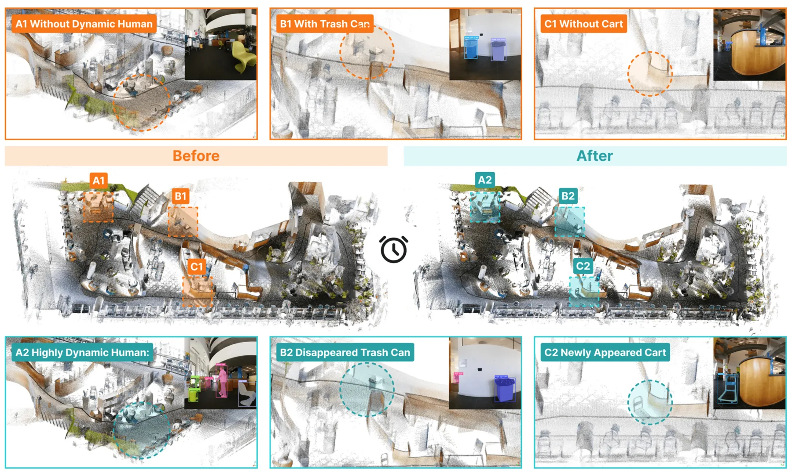
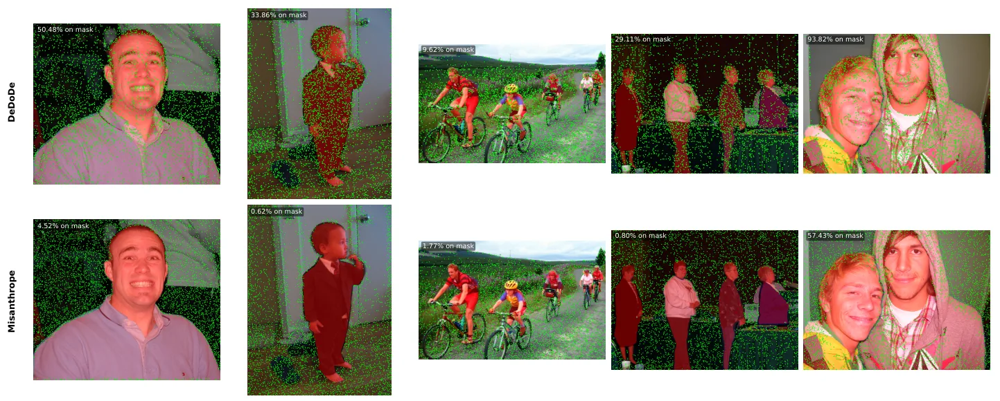

论文预览
新论文 · 日期 2026-08-27 · score 22 · S层 · Learning + Geometric Optimization SLAM/VIO · cs.CV, cs.RO
内容级别：完整单篇海报
作者：Jean-Daniel de Ambrogi, Aladine Chetouani, Vincent Nguyen, Aurélien Chateigner
评分 11/10
协作 SLAM度量深度视觉惯性3DGS多智能体
一句话工作总结：它把度量单目深度、惯性先验、低带宽关键帧通信和跨智能体子地图对齐串成一个可部署的协作几何管线。最值得复用的是对近场深度失效、转弯退化和通信预算的显式评测。
CGS-SLAM 是一个仅使用 RGB 与惯性数据的混合式去中心化/中心化多智能体 3DGS SLAM 系统。每个智能体用 IMU 作为运动先验，并用 Depth Pro 产生度量深度；服务器通过关键帧编码和 VGGT 对齐子地图。
Recent advances in SLAM have leveraged 3DGS for photorealistic reconstruction and novel view synthesis. However, most methods rely on RGB-D input, which is unavailable on consumer-grade smartphones, and few in…

新论文 · 日期 2026-08-24 · score 10 · S层 · 3D/4D Spatial Perception · cs.RO
内容级别：完整单篇海报
作者：Shibo Zhao, Guofei Chen, Honghao Zhu, Zhiheng Li
评分 10/10
4D 场景图开放词汇时空地图VLN实例跟踪
一句话工作总结：这是一条从可靠位姿与稠密几何到对象级时空记忆、再到 VLM 导航的完整桥接链路。论文同时给出了在线频率、实例变化召回和模块消融，适合作为空间推理前的地图接口基线。
SuperMap 将高频几何 SLAM 与异步开放词汇感知结合，维护可查询的实例级 4D 场景图。它通过 3D 感知的实例关联、几何一致性更新和 Bayesian 语义融合，处理遮挡、物体出现/消失以及长期语义变化。
Robotic navigation in human environments requires a spatio-temporal semantic representation that can rec- oncile open-vocabulary perception with long-term environmental changes. While foundation models provide…
新论文 · 日期 2026-08-24 · score 9 · A层 · Embodied Navigation / VLN / Spatial Reasoning · cs.LG, cs.RO
内容级别：半海报（待补全）
作者：Simon Hakenes, Tobias Glasmachers
评分 9/10
具身导航局部定位EKF宏动作强化学习
一句话工作总结：它把可靠状态估计问题拆成运动模型维持航向、视觉测量限制位置漂移两个可诊断模块。对具身导航而言，这是一个低成本、可注入执行噪声的局部定位基线。
论文在逼真 Habitat 公寓中用 ORB 特征、Kabsch 配准和 EKF 建立局部一致但会漂移的自定位，并让 DQN 通过宏动作完成多目标导航。结果表明无需全局精确 SLAM，只要附近物体与机器人保持局部一致，导航仍可运行。
Navigating large, photorealistic 3D apartments from raw pixels is widely considered infeasible for plain reinforcement learning. We build an agent that does it anyway, estimating its own pose from the camera a…

新论文 · 日期 2026-08-24 · score 7 · A层 · Robust State Estimation / Uncertainty · cs.CV
内容级别：半海报（待补全）
作者：Francesco Vultaggio, Predrag Djindjic, Markus Gerke, Sebastian Tschiatschek
评分 8/10
视觉定位隐私保护关键点检测特征反演自蒸馏
一句话工作总结：这是可靠视觉定位的鲁棒性与隐私侧观察项：把风险抑制前移到特征产生阶段，而不是事后模糊化。其关键实验同时涉及匹配质量、特征反演和人物避让，适合扩展到共享地图的安全评测。
Misanthrope 通过自蒸馏训练关键点检测器，主动避开人物区域，以降低分布式视觉定位中局部特征反演和身份重识别风险。作者报告在保持匹配性能的同时，在含人物干扰的场景中改善了特征提取。
Image matching is a core component of applications such as Simultaneous Localization and Mapping (SLAM), Visual Localization, and Structure from Motion (SfM). However, the local image features central to this…

新论文 · 日期 2026-08-26 · score 3 · A-层 · Real-time / GPU Robotics Systems · cs.RO
内容级别：简报式摘要
作者：Ho Young Yun, Jaemin Yu, Duksu Kim
评分 5/10
果园导航点云拓扑图DijkstraTheta*
一句话工作总结：A-观察项把 SLAM 几何点云转化为结构化农业导航图，强调狭窄通道中的可解释规划和真实部署。
AGRO-Nav 从 SLAM 点云中的树干聚类拟合树行，自动构建行内与行间连通的稀疏拓扑图，并用 Dijkstra、Theta* 和 B-spline 生成行中心轨迹。真实果园实验的平均偏差约 0.08 m，规划速度约为基线的 4–5 倍。
Orchards form semi-structured environments in which parallel tree rows create natural driving corridors, yet narrow inter-row clearance and dense foliage lead geometry-agnostic grid planners to drift off the r…
新论文 · 日期 2026-08-24 · score 3 · A-层 · Real-time / GPU Robotics Systems · cs.RO
内容级别：简报式摘要
作者：Mihaela-Larisa Clement, Agnes Poks, Ezio Bartocci
评分 4/10
Isaac Sim自主赛车占据栅格GPU 仿真程序化生成
一句话工作总结：A-观察项提供了从 SLAM 栅格到可复现仿真资产的工程桥梁，重点价值在环境生成、验证和并行吞吐而非新的状态估计方法。
RoboRacer Arena 从占据栅格自动提取可行驶走廊、边界和碰撞距离场，并程序化生成 Isaac Sim 的 USD 赛道。它支持来自 SLAM、赛车地图和自然语言规格的输入，面向大规模并行自主赛车训练。
RoboRacer offers a standardized platform for research using 1:10-scale autonomous vehicles, but the variety of available tracks hinders the process of acquiring policies. Although existing occupancy-grid simul…